H
HTML5
웹 표준과 접근성을 준수한 마크업 작성 능력을 보유하고 있으며, Vue 템플릿 구조와 결합한 컴포넌트 기반 레이아웃 설계 경험이 있습니다.
웹 표준과 접근성을 기반으로, 퍼블리싱부터 컴포넌트 설계까지 실무에서 검증된 기술 스택입니다.
웹 표준과 접근성을 준수한 마크업 작성 능력을 보유하고 있으며, Vue 템플릿 구조와 결합한 컴포넌트 기반 레이아웃 설계 경험이 있습니다.
vw, rem 등 상대 단위를 활용한 반응형 퍼블리싱 경험이 있습니다. Vue 프로젝트에서는 SCSS로 변수·믹스인·모듈화를 적용해 스타일 구조를 관리했습니다.
UI 인터랙션, 이벤트 처리, 동적 데이터 렌더링 등 퍼블리싱 과정에서 필요한 수준의 JavaScript 기능을 구현할 수 있습니다.
전기안전인재개발원 프로젝트에서 매년 웹접근성 인증마크 갱신을 직접 수행했습니다. WCAG/KWCAG에 따라 시맨틱 마크업, 대체 텍스트, 폼 라벨, 키보드 네비게이션을 적용합니다.
Vuetify와 AG-Grid 기반으로 실제 서비스 화면을 퍼블리싱·구현했습니다. 컴포넌트 단위로 화면을 구성하고 백엔드와 협업하며 Vue 프로젝트 구조 안에서 작업했습니다.
React와 Storybook으로 공통 컴포넌트를 구축해 프로젝트별 UI 요구사항을 일관되게 적용했습니다. 반복 요소를 컴포넌트화·문서화해 재사용성과 유지보수성을 높였습니다.
예시 작업물Kendo UI, AG Grid, Vuetify, Mobiscroll, Swiper, Slick 등 다양한 컴포넌트 라이브러리로 차트·그리드·스케쥴러·슬라이드 같은 복합 UI를 요구사항에 맞게 커스터마이징했습니다.
브랜치 전략, Pull Request 리뷰, Merge 협업을 경험했습니다. 퍼블리싱 및 프론트엔드 코드를 GitHub로 관리하고 개발자들과 버전 관리를 진행했습니다.
데모 코드오토 레이아웃(Auto Layout)의 구조와 동작 원리를 이해하고, 디자인 시안을 정확히 해석해 퍼블리싱에 반영합니다. 컴포넌트·베리언트 개념을 바탕으로 간단한 컴포넌트 작업도 직접 수행할 수 있습니다.
함께 만든 결과,
프론트엔드 퍼블리싱 및 화면 개발 실무 경력.
교육·공공·기업 시스템 등 참여한 엔터프라이즈 프로젝트.
다수 프로젝트를 단독으로 주도해 끝까지 책임진 기여도.
와이어프레임을 코드에 그대로 녹여내는 체계적인 퍼블리싱. 협업을 위한 클린 코드를 원칙으로 합니다.
개발 전 항상 "Why?"를 묻습니다. 기획 의도를 명확히 파악해 불필요한 작업 공수를 줄이고 사용자 관점에서 기능을 정의합니다.
기능정의서를 바탕으로 와이어프레임을 설계하고, 이를 고려한 체계적인 HTML 구조설계와 컴포넌트 단위 분리를 진행합니다.
인덴트·주석으로 가독성을 높여 협업을 고려해 작업합니다. 직군 간 언어 차이를 조율하며 기획–디자인–개발 흐름을 잇습니다.
공통 패턴 분리·코드 규칙 통일·재사용성 중심 구조화로 운영 단계의 수정 비용을 최소화하는 클린 코드를 작성합니다.
교육·공공·기업 시스템을 Vue, JSP, Kendo UI 등으로 퍼블리싱하고
프론트엔드를 구현했습니다.
포트폴리오 열람 안내 (Security & NDA)
아래 프로젝트들은 기업 내부 시스템으로, 보안 서약(NDA)에 따라 실제 운영 사이트 링크 및 원본 소스 공개가 불가능합니다. 대신 핵심 기능을 동일한 기술 스택으로 재구현한 Sanitized Demo(클린 버전) 및 GitHub 리포지토리를 제공합니다.
쇼핑몰, 기업 홍보, 호텔 그리고 모바일 웹
— 직접 기획·디자인·퍼블리싱한 작업물입니다.

가방 브랜드 투티에를 반응형으로 제작했습니다. 기존 사이트에서 가려져 있던 네비게이션이 잘 보이도록 사용자 편의성을 더욱 고려했습니다.

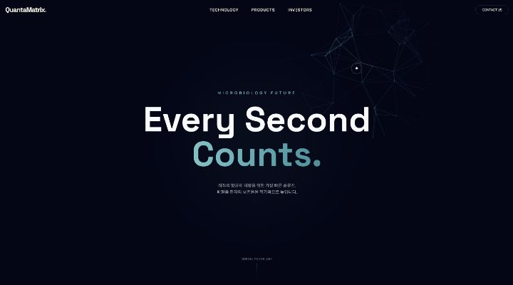
퀀타매트릭스 기업 페이지를 GSAP 라이브러리로 리디자인했습니다. ScrollTrigger, Timeline, Stagger, Modifiers & Snap, Utils를 활용해 작업했습니다.

기존 샹그릴라 보라카이 리조트를 벤치마킹해 새로운 구조로 리디자인했습니다. 단시간에 반응형을 고려한 구조 설계에 가장 중점을 두었으며 Flex를 사용했습니다.
Netflix · Apple · Chrome을 반응형으로 클론 코딩했습니다. 제한된 시간(5시간) 안에 빠르고 정확하게 작업하는 데 중점을 두었습니다.
프로토타입부터 인터랙션까지 — 실무 감각을 다듬으며 만든 UI 컴포넌트 모음입니다. 카드를 누르면 라이브 데모가 열립니다.
Illustrator · InDesign · Photoshop으로 작업한 그래픽 결과물입니다.
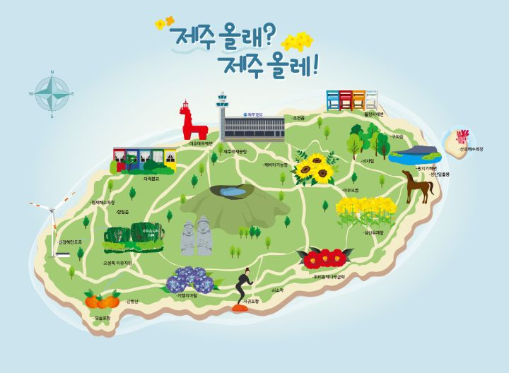
Mapby Illustrator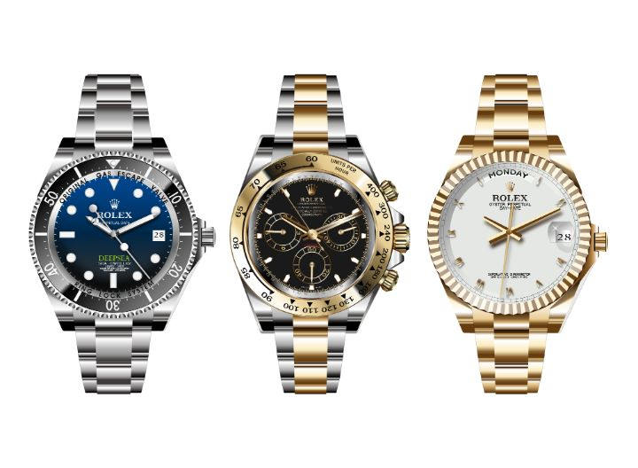
Watchby Illustrator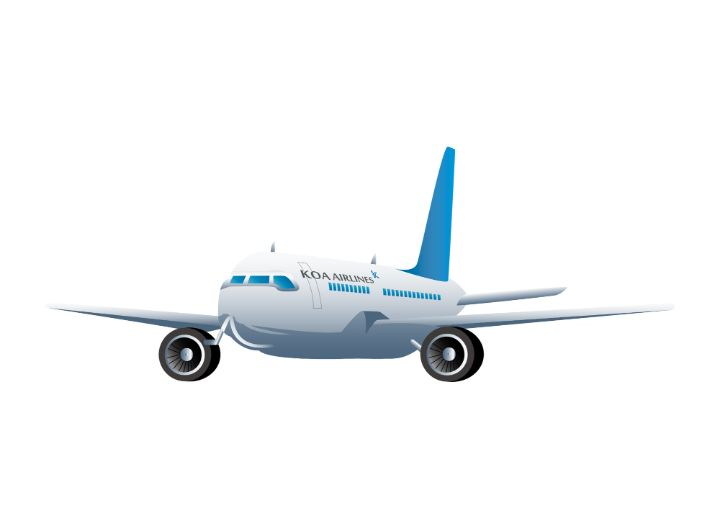
Airplaneby Illustrator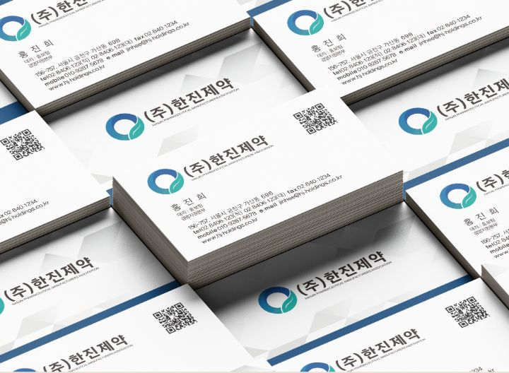
Business Cardby Illustrator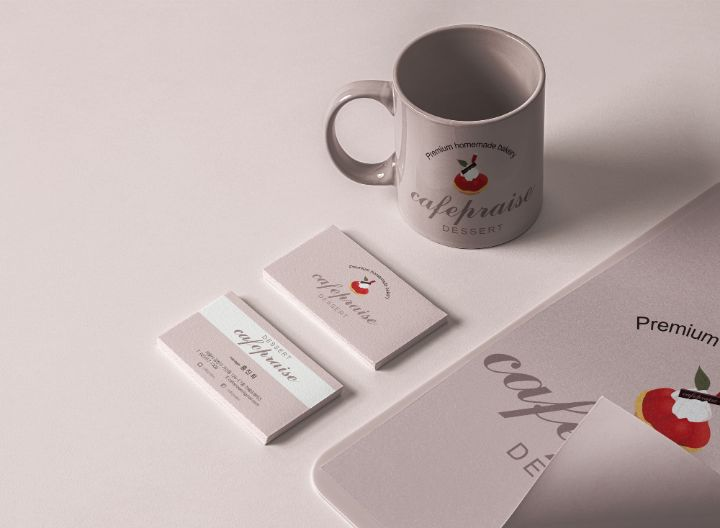
Business Cardby Illustrator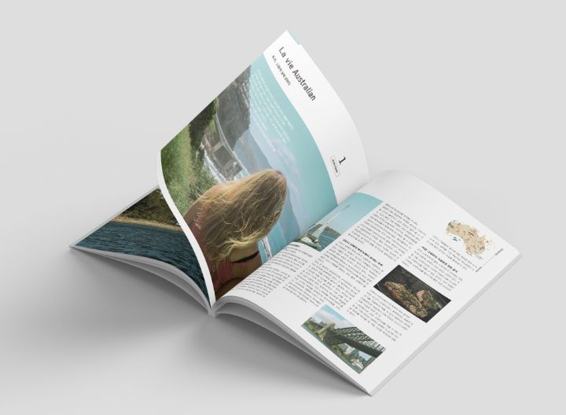
Magazineby InDesign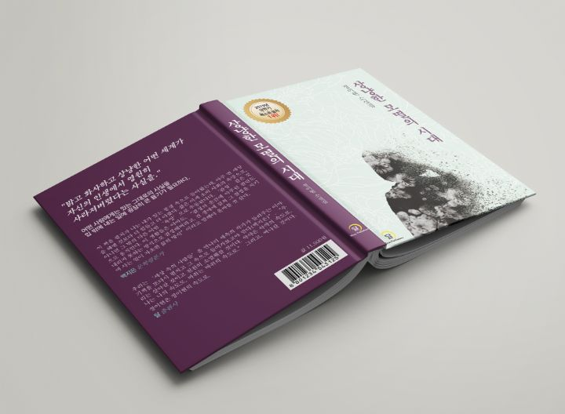
Book Coverby InDesign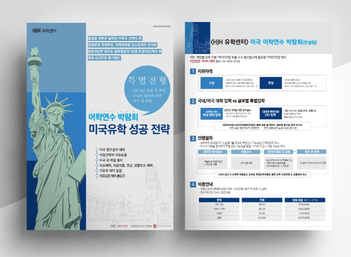
Leafletby InDesign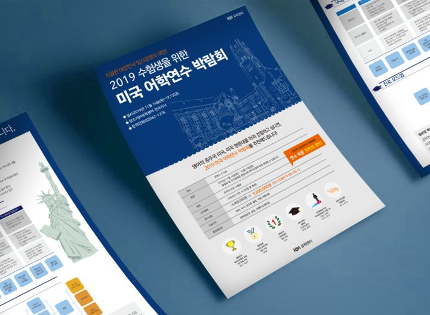
Leafletby InDesign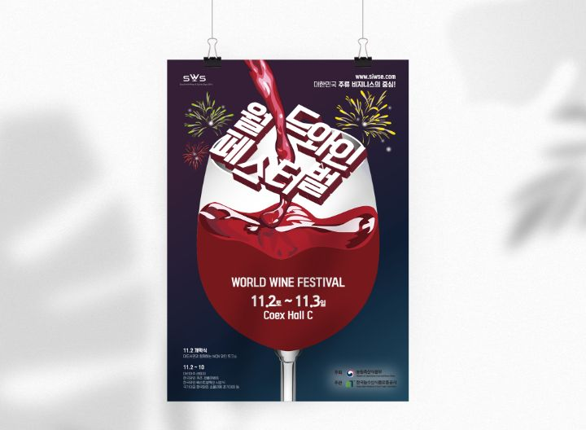
Posterby Illustrator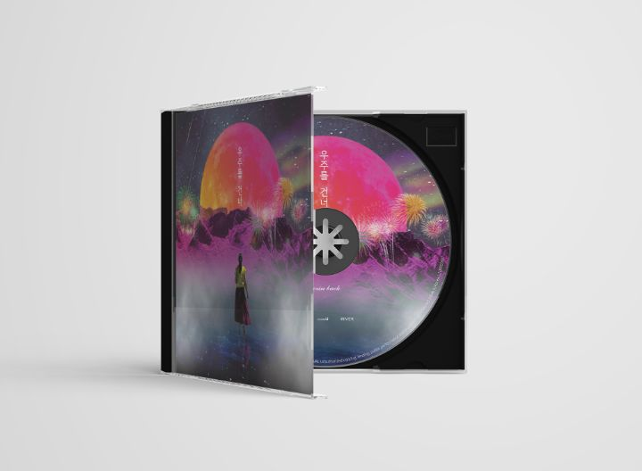
CDby Photoshop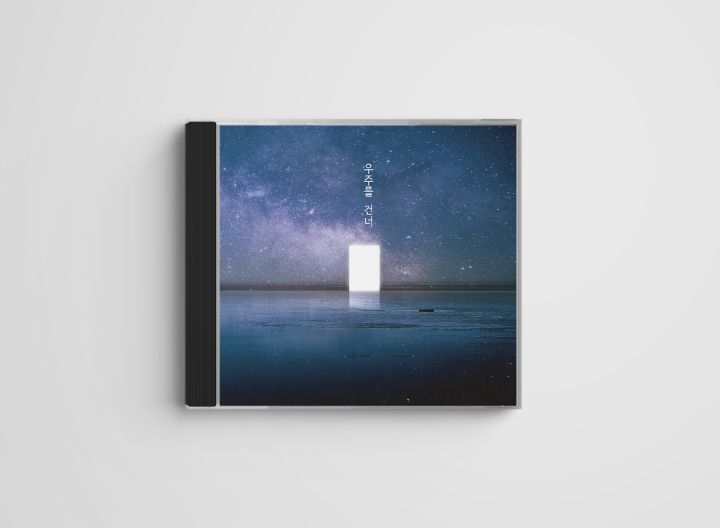
CDby Photoshop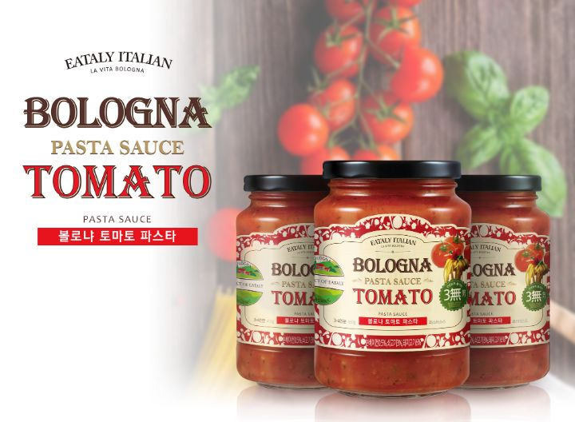
Labelby Illustrator기획 의도를 이해하고, 협업 속도를 높이며, 유지보수까지 책임지는 프론트엔드 퍼블리셔를 찾고 계신가요? 작업물과 코드를 자유롭게 살펴보세요.
{kind=link}
{kind=link}
{kind=link}
{kind=link}
{kind=link}
{kind=link}
{kind=link}
{kind=link}
{kind=link}
{kind=link}
{kind=link}
{kind=link}
{kind=link}